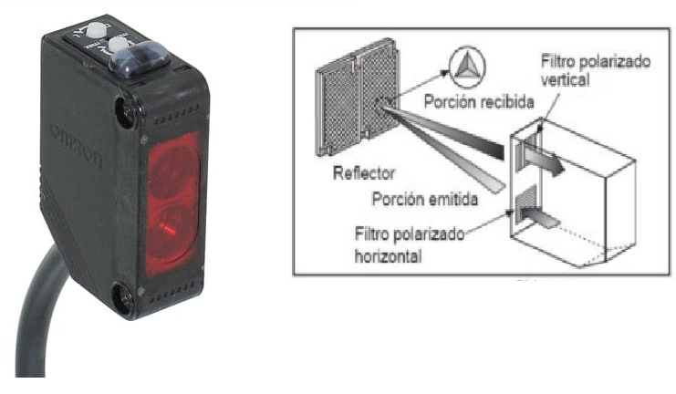

4. Entradas del PLC: sensores y pulsadores
Las entradas son señales que llegan al PLC. En este sistema las entradas vienen desde pulsadores y sensores.
Idea principal
Un sensor no mueve nada. Un sensor informa algo al PLC.
Ejemplo: el sensor de Piso 2 informa que la plataforma está en el Piso 2.
Tabla de entradas
| Elemento físico | Dirección PLC | ¿Qué informa? |
|---|---|---|
| Pulsador Piso 1 | M0 | El usuario solicita ir al Piso 1. |
| Pulsador Piso 2 | M1 | El usuario solicita ir al Piso 2. |
| Pulsador Piso 3 | M2 | El usuario solicita ir al Piso 3. |
| Sensor Piso 1 | M3 | La plataforma está en el Piso 1. |
| Sensor Piso 2 | M4 | La plataforma está en el Piso 2. |
| Sensor Piso 3 | M5 | La plataforma está en el Piso 3. |
| Sensor aviso Piso 1 | M6 | La plataforma se acerca al Piso 1. |
| Sensor aviso Piso 2 desde abajo | M7 | La plataforma se acerca al Piso 2 subiendo. |
| Sensor aviso Piso 3 | M8 | La plataforma se acerca al Piso 3. |
| Sensor aviso Piso 2 desde arriba | M9 | La plataforma se acerca al Piso 2 bajando. |
Ejercicio 1: completar
Si la plataforma está en el Piso 1, se activa el sensor
Si la plataforma está en el Piso 2, se activa el sensor
Si la plataforma está en el Piso 3, se activa el sensor
Si el usuario presiona el botón para ir al Piso 2, se activa

5. Sensores de aviso: detener antes para llegar bien
El motor del montacarga no se detiene de inmediato. Tiene inercia. Por eso se usan sensores de aviso.
Idea clave
El sensor de piso indica dónde quedó la plataforma.
El sensor de aviso indica que la plataforma se está acercando y que debe comenzar la detención.
Ejercicio 2: observar el sentido del movimiento
| Situación | ¿Qué sensor de aviso debería aparecer antes de detener? |
|---|---|
| La plataforma baja desde Piso 2 hacia Piso 1. | |
| La plataforma sube desde Piso 1 hacia Piso 2. | |
| La plataforma baja desde Piso 3 hacia Piso 2. | |
| La plataforma sube desde Piso 2 hacia Piso 3. |
Explicación para Tomás
Cuando el montacarga viene desde abajo hacia el Piso 2, primero pasa por el aviso de Piso 2 desde abajo.
Cuando el montacarga viene desde arriba hacia el Piso 2, primero pasa por el aviso de Piso 2 desde arriba.
6. Salidas del PLC: actuadores
Las salidas son órdenes que entrega el PLC. En este sistema las salidas activan el motor y las luces.
Idea principal
Una salida sí realiza una acción física.
Ejemplo: Y0 ordena que el motor suba la plataforma.
| Actuador | Dirección PLC | Acción |
|---|---|---|
| Motor subir | Y0 | Hace subir la plataforma. |
| Motor bajar | Y1 | Hace bajar la plataforma. |
| Luz Piso 1 | Y2 | Indica Piso 1. |
| Luz Piso 2 | Y3 | Indica Piso 2. |
| Luz Piso 3 | Y4 | Indica Piso 3. |
Ejercicio 3: completar
Para subir la plataforma se activa la salida
Para bajar la plataforma se activa la salida
Cuando la plataforma está en el Piso 1, debería encender la luz
Cuando la plataforma está en el Piso 3, debería encender la luz

7. Análisis de situaciones
Ahora relacionaremos entradas, salidas y movimiento.
Regla simple
Si el piso pedido está más arriba, el montacarga debe subir.
Si el piso pedido está más abajo, el montacarga debe bajar.
Si el montacarga ya está en el piso pedido, no debe moverse.
| Situación | ¿Sube, baja o queda detenido? | Salida que se activa | Sensor final esperado |
|---|---|---|---|
| Está en Piso 1 y se presiona Piso 2. | |||
| Está en Piso 3 y se presiona Piso 1. | |||
| Está en Piso 2 y se presiona Piso 2. | |||
| Está en Piso 2 y se presiona Piso 3. |
9. Ficha resumen
Completa la tabla usando la información trabajada en la guía.
| Elemento | Dirección PLC | ¿Es entrada o salida? | ¿Qué hace? |
|---|---|---|---|
| Motor subir | |||
| Motor bajar | |||
| Sensor Piso 1 | |||
| Sensor Piso 2 | |||
| Sensor Piso 3 | |||
| Luz Piso 1 | |||
| Luz Piso 2 | |||
| Luz Piso 3 |
10. Autoevaluación
| Indicador | Sí | Con ayuda | No |
|---|---|---|---|
| Reconozco los sensores del montacarga. | |||
| Reconozco los actuadores del montacarga. | |||
| Puedo decir qué significa M3, M4 y M5. | |||
| Puedo decir qué hacen Y0 e Y1. | |||
| Comprendo para qué sirven los sensores de aviso. | |||
| Puedo explicar cuándo el montacarga sube, baja o se detiene. |
11. Evaluación del profesor
| Criterio | Logrado | En desarrollo | Requiere apoyo |
|---|---|---|---|
| Identifica entradas del PLC. | |||
| Identifica salidas del PLC. | |||
| Relaciona sensor con función física. | |||
| Relaciona salida con actuador. | |||
| Analiza situaciones simples de movimiento. | |||
| Explica verbalmente el funcionamiento básico del sistema. |